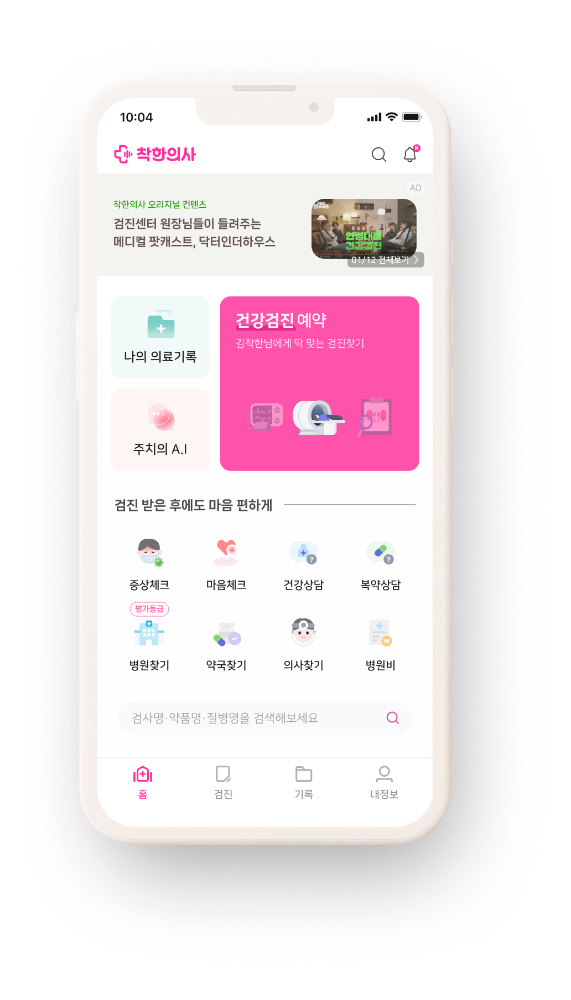
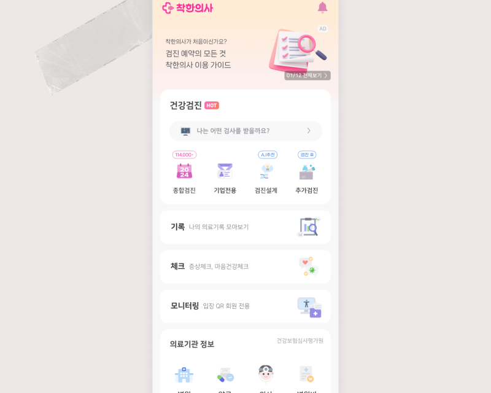
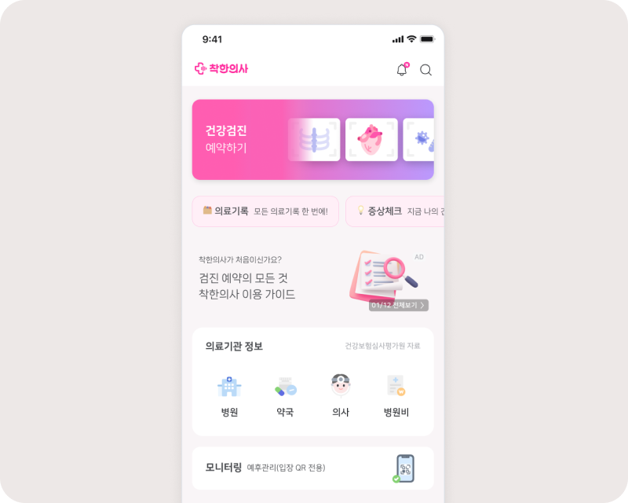
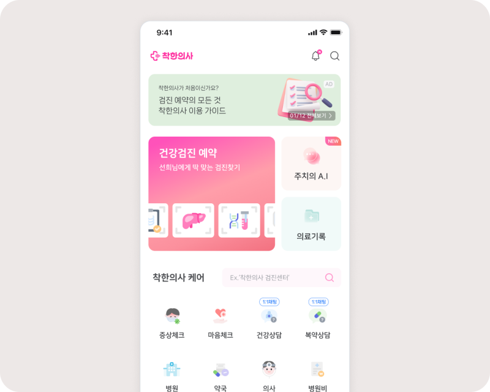
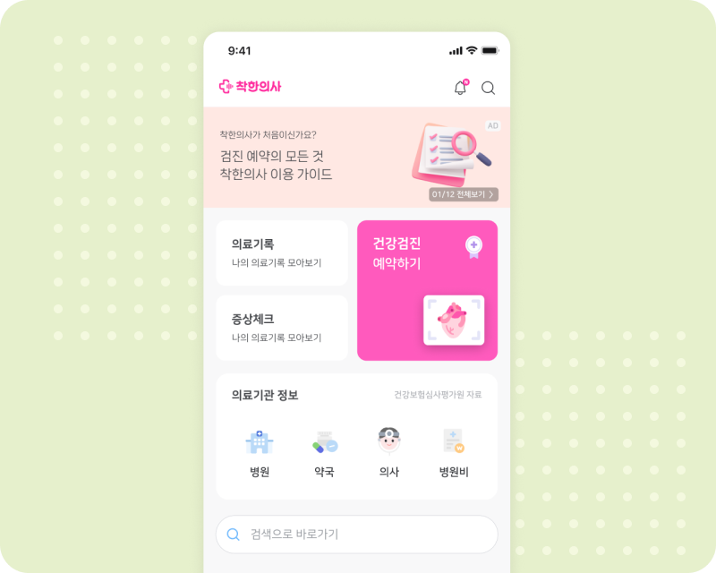

Rebuilding the main screen
for core business.
Kindoc had pivoted into an O2O health checkup booking platform, but the main screen still mirrored its earlier life as a hospital info app. I led the renewal — restructuring the visual hierarchy, repositioning the primary CTA, and introducing an entry point for the new Kindoc AI feature.

Health checkups became the core business. The main screen didn't know that.
By 2024, checkup bookings were Kindoc's primary revenue driver — but the main screen, untouched since launch, still treated them as one of many features.
Users couldn't find the booking flow.
Four years of short-term requests had left the screen drifting — unclear hierarchy, oversized components, primary and secondary actions competing for the same space. The checkup button, the single most important action, was visually indistinguishable from secondary entries.

Existing main screen
Four years of accumulated requests, no holistic redesign.

CTR drop
46% (Dec) → 32% (Jan). Beyond seasonal variance.
Five objectives. Four directions. One that earned the CTA.
Moving the CTA alone wouldn't fix it. The screen's hierarchy needed to reflect what the business had become. I set five objectives and explored four directions against them.
Lift CTR to the booking flow
Prior rates: 46% (Dec) → 32% (Jan). The single most important number to move.
Introduce Kindoc AI
Place the new generative AI assistant in a visible position without crowding the primary flow.
Clarify primary vs. secondary actions
Re-establish hierarchy through size, color, and placement.
De-emphasize underdeveloped features
The search bar's backend wasn't ready; it shouldn't read as a primary action.
Simplify the footer
Reduce navigation noise at the bottom of the screen.
Reference & Analysis.
I gathered mobile main screens across health, finance, mobility, and lifestyle services — looking for how each balanced a primary action against secondary entries.
Layout Patterns & CTA Placement
Recent box-style main screens often adopt masonry-style layouts and use color or motion to emphasize primary actions. CTA placement varied depending on layout context and the presence of top-area elements such as banners or ads.
- Primary and secondary actions were clearly differentiated through size and color.
- Visual flow was strongly influenced by elements occupying the top area.
- CTA placement was not fixed and required careful consideration of eye movement and layout consistency.
Designing four layouts, choosing one.

Direct list access. Not feasible under dev constraints.

Prominent CTA, but mid-screen ad competed with it.

Equal-weight squares flattened hierarchy.

Full-width banner + right-aligned CTA. Zigzag scan.
Giving each action the weight it deserved.
Reordering the information hierarchy and recalibrating the size and weight of every action — reshaping the top half around the primary CTA, and the bottom half around after-care.
A primary CTA that earned its prominence.
The banner moved to the top-left and the CTA to the bottom-right — aligning the Z-pattern scan flow with the thumb zone. The ad area shrank, keeping the same text-to-image ratio on less screen real estate. As a newly launched feature, Kindoc AI needed visible presence — but not at the cost of the booking flow. It earned the secondary band: noticeable on first scroll, clearly an entry point, yet never weighted to compete with the primary CTA.

Primary Zone — reduced ad, right-aligned Book Check-up CTA, and the Kindoc AI entry in a secondary band. The tab bar is omitted here for clarity. (Left: before · Right: after)
After-care features replacing dead weight.
Surfaced the after-care features returning users actually reached for — symptom checks, finding hospitals, checking expenses, self-assessments — gathered into one scannable grid. The empty search bar was demoted to a secondary role rather than reading as a primary action, and the footer's information hierarchy was reorganized to cut navigation noise at the bottom of the screen.

After-care Zone — post-checkup tools (symptom check, find a hospital/pharmacy/doctor, expenses) gathered into one scannable grid, the search bar demoted to a secondary role, and the footer's information hierarchy reorganized. (Left: before · Right: after)
Documentation beyond Figma specs.
In addition to the Figma UI specs, I wrote a front-end guide (component states, edge cases, motion notes) and a brand designer guide (banner ratios, safe zones, tone). The renewal shipped without QA loops on UI fidelity.

For front-end developers
Component specs, states, motion notes, edge cases.

For marketing designers
Banner ratios, safe zones, tone alignment with the renewed UI.
+39% in one month, no campaign attached.
Launched May 3, 2024. No push notifications, no in-app promotions, no marketing spend.


Users didn't need new features. They needed the existing ones to lead somewhere.
The instinct in stuck-conversion situations is to add. The harder thing is to subtract — to ask which existing element is supposed to be doing the work, and why it isn't.